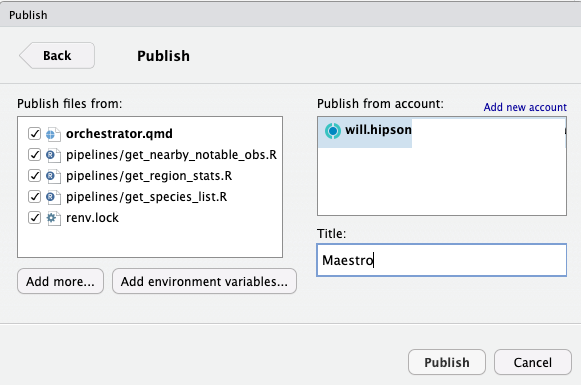
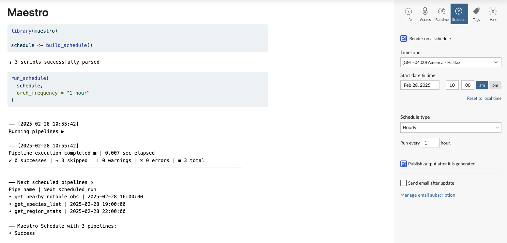

Maestro is only of practical use if it’s deployed. It doesn’t matter if this deployment is cloud or on a local server, but the goal is to have it run automatically on a regular cadence. In this way, maestro can be the backbone of a small-moderate enterprise’s data orchestration.
Maestro deployment is not all that different from deploying any R script. The main difference is that you need to deploy the entire project (pipelines + orchestrator) and then target specifically the orchestrator script to execute repeatedly.
There are numerous avenues for deploying a maestro project, so here we’ll just look a handful of options. Here we will only focus on the execution of maestro and not on side effects like storage and networking (in practice, you’d probably have your pipelines do something like read from an external source and load to a data warehouse).
Our example to deploy will be as simple as it gets - just the bare bones skeleton generated from maestro::create_maestro(). This builds an empty maestro project with a single pipeline and an orchestrator script. It is sufficient for testing but does nothing of interest.
Local Deployment using Cron/Task Manager
The easiest way to deploy maestro is to have it run on your own local machine and triggered on a schedule using Cron (Mac/Linux)/Task Scheduler (Windows).
Cron
If your OS is Linux or Mac you can use Cron scheduling. The cronR package allows you to create and manage cron scheduled tasks from within R. Create a new script at the root level of the project:
Task Scheduler
If your OS is Windows you can leverage Task Scheduler. The taskscheduleR package allows you to create and manage scheduled tasks from within R. Create a new R script at the root level of the project:
Limitations
While this is the easiest approach it has a number of limitations. First, these will only run if the machine is constantly running (i.e., not in hibernation or sleep mode); so if you’re doing this on a desktop or laptop you’ll probably need to go through some extra steps to allow it to run even when closed.
Second, even if you have continuous availability, it is hard to monitor the success of the deployment. There are GUI-based managers for Cron and Task Scheduler, but they’re a far cry from true observability.
Third, it is difficult to version this kind of deployment. If you need to make changes or reversions you can quickly get lost in a swamp of stale and aborted deployments.
All said, this kind of deployment is probably only advisable for testing and proof-of-concept. There are probably more sophisticated Cron wrappers or substitutes that make local deployment more feasible (i.e., include monitoring, CI/CD, etc.), but we won’t focus on those here.
Posit Connect
Seasoned R users will likely be familiar with Posit and its hosting platform Posit Connect. While traditionally seen as a hosting environment for dashboards, APIs, and reports, it is actually perfectly capable of data orchestration with maestro.
Note
A Posit Connect license and instance is required for this type of deployment. User must also have Publisher privileges to deploy to Connect.
The key difference for a Posit Connect deployment is the use of Quarto for the orchestrator.1 There’s no need for any visual embellishments in this Quarto doc (but, hey, here’s a pretty good place for some observability metrics and graphics!), all you need is at least one R chunk containing the orchestrator code.
Here’s a basic .qmd script that could be deployed on Posit Connect.
---
title: "Maestro"
format: html
resources:
- pipelines/*
- renv.lock
---
```{r}
library(maestro)
schedule <- build_schedule()
run_schedule(
schedule,
orch_frequency = "1 hour"
)
```You can then use the push deployment via RStudio or Positron. In RStudio it looks like this:

Make sure you select Publish with source code so that you can trigger the orchestrator to run on a schedule in Connect.
Once it has been published you can set the schedule using the Schedule tab. Be sure to use the same schedule frequency as your orchestration frequency:
